(2007-01-09 15:03:58)
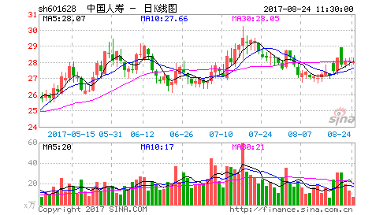
【韶山映山红】原文配图是601628中国人寿日线图。新浪博客自动更新为当下的新图。中国人寿于博客发表当日上市，所以当时的日K线图只有一根K线。这里贴上当时几天的日K线图。】
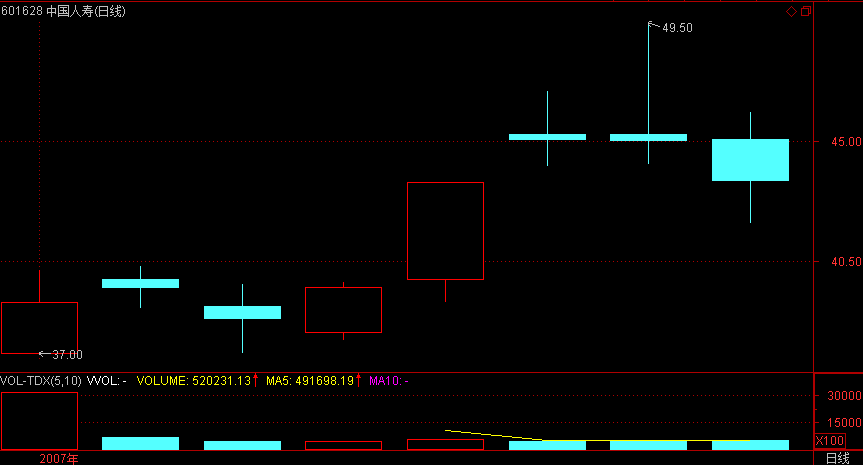
前面已经说过三类的买卖点，一个很现实的问题，就是除了这三类买卖点之外，还有什么其他类型的买卖点？
答案是否定的。【韶山映山红】从操作的角度也可以说，整个缠论就是关于三类买卖点的理论。】
这里必须强调的是，这三类买卖点，都是被理论所保证的，100%安全的买卖点，如果对这三类买卖点的绝对安全性没有充分的理解，就绝对不可能也绝对没有对缠中说禅技术分析理论有一个充分的理解。【韶山映山红】理解，才能信任。】
市场交易，归根结底就是买卖点的把握，【韶山映山红】缠论学习，归根结底也是买卖点的把握。】买卖点的完备性就是理论的完备性，因此，对这个问题必须进行一个概括性的论述。
【韶山映山红】 若禅精舍（陈秋明）：
三类买卖点，归根结底都是某级别的第一买卖点，而在不同级别层次中的各种买卖点的组合所提示的不同操作意义，是实际操作中的核心问题。
根据走势必完美和第一买点的定义，所有的买点结构分类如下：
以上五个图形结构，囊括了所有的买点结构，这五种，是基本形态。而所有实际走势的买点结构，无非就是在盘整的高低点、中枢的延伸长度、离开中枢是否有第三卖点、中枢的形态结构这四个方面有所区别。
注意，以上的讨论均是基于同级别层次展开，例如五分钟的，那么，这些所有买点结构中的任何一种，与高级别也就是30分钟级别的走势结构当下的关系，就是所有基于图形的操作需要考察的地方。例如上图第一列第三个形态，可以构成高级别的第二买点或者第三买点，也可以构成高级别中枢震荡中的一个次级别段，例如是第一列第一个图形的第三段红颜色箭头的次级别走势结构。对同级别走势结构，所处在的高级别运行阶段，就是在当下操作图形上重点考察的地方。
】
所谓100%安全的买卖点，就是这点之后，市场必然发生转折，没有任何模糊或需要分辨的情况需要选择。【韶山映山红】不同买卖点引发的转折的级别是不一样的。】
市场交易，不能完全建筑在或然上，这市场的绝对必然性，是交易中唯一值得信赖的港湾。【韶山映山红】缠论不做纯概率游戏。也不是没有或然。缠论的预测建立在完全分类的基础上。港湾建立在理论的学习和运用的基础上。】
有人可能要反驳说，世界上没有绝对的东西。那么，世界上没有绝对的绝对性又是哪个上帝所保证的？
任何的绝对性，都是建立在“不患”之上的，而市场本身，也是建立在“不患”之上的，“不患”本“患”，“患”本“不患”，但这不影响其精彩与绝对。相关方面的理解，请多看本ID所解释的《论语》。
股票市场，不是一个单纯的理论问题。虽然在理论上，本ID可以向所有人揭示其买卖点的完备性，但买卖点不可能自动去买卖，最终的交易是人去完成的，相同的工具，可能在不同的人手下就有了完全不同的结果，而市场只看结果，任何人，哭着喊着说自己所用的理论是完备的、最好的都没用，是人使理论，而非理论使人，要让这人使理论达到理论一般的完美，最终只能靠自己在市场中的修炼了，这就与《论语》有着密切的关系了。修、齐、治、平，同样适用于股票市场的交易。
【韶山映山红】 若禅精舍（陈秋明）：
人能弘道，非道弘人。一切基于现实或先验的理论，最终都必须落实在人的身上，通过人来彰显道，而不是用虚无缥缈的道去约束人。在股票交易中，包括这些解读的文字，其实都是废话，最多算是无聊打发的脑分泌物，人才是第一生产力。这是在股票技术之上的存在，在技术这一关过去之后，自然会看到，而在没看到之前，基本上都是持无所谓、没用、不实际、虚无缥缈之类的态度，这在实际中简直太常见了。而其实只要在任何一个专业领域有着顶尖的水准，这些都是很容易理解的常识，因为经历过，所以并不陌生。通常而言，这两种人，往往对这方面话题都是话不投机互道傻逼，但不同的人对同一件事情的不同结果，就是二者区别的最好注脚。
最典型的就是求绝招、寻秘籍之类的人和事，以为有了本《如来神掌》就天下无敌了，纯属武侠小说看多了。练九阴真经的也可以被练七伤拳的打死，但黄药师绝不会输给陈昆。而在股市中，其实流传下来的各种技术理论，都有其实用的价值，不仅是缠论，其他任何一门技术理论都可以让人称为一名成功的交易者，而其实并不是这些理论让人成功的，而是人本身让人成功的。要说其中的区别，大概就是同一个人，选择不同的技术理论，会有速度快慢的问题，和最终能够向上提升的空间大小问题，其他的并没有本质的不同。就好像用摩托、自行车、跑车，都可以到目的地一样，一个手脚不协调的人开着跑车，也并不一定就比骑自行车的快。
】
从上面一系列关于缠中说禅走势中枢的分析可知，在走势中的任何一个点，必然面临两种可能：走势类型的延续或转折。【韶山映山红】对走势类型来说，延续就是现在的走势类型继续生存，转折就是现在的走势类型死去，新的走势类型生成。】
换言之，例如对于一个必然的买点，必须满足以下的两种情况之一：一个向上的延续或一个由下往上的转折。【韶山映山红】必然的买点，就是买了之后必然有相应的上涨。所以完全分类只有两种：向上的就延续，向下的就转折。】
对于延续的情况，能产生的，只能是在一个上升的过程中，否则就无所谓延续了，对于上升的延续中产生的买点，必然有一个中枢在前面存在着；【韶山映山红】已经转折并形成本级别走势，就必然有一个当下级别走势类型的中枢。这个中枢和买点属于同一个走势类型。】
对于转折，被转折的前一段走势类型只能是下跌与盘整，而无论的下跌还是盘整，买点之前都必然有一个走势中枢存在。【韶山映山红】转折前的走势类型至少有一个中枢，次级别以下的走势到买点，买点开启后一个走势类型。注意：这里说下跌与盘整之后都可以有转折，也就是说，盘整是同级别的盘整。】
归纳上述，无论前面的走势是什么情况，都唯一对应着一个中枢存在后走势的延续或转折，这分析对卖点同样有效。【韶山映山红】站在走势类型分析的角度得到结论：必然的买点都唯一对应着一个中枢。或者是本走势类型的中枢，或者是前走势类型的中枢。】
【韶山映山红】 若禅精舍（陈秋明）：
所有买点的前面，必然有一个中枢存在着，这就是本段所说的内容，而所有背驰段，都是围绕一个中枢产生的。对卖点，同样如此。
】
因此，所有买卖点都必然对应着与该级别最靠近的一个中枢的关系。【韶山映山红】一买、二买对应着前一个走势类型的最近的中枢。三买有两种情况，一是和一买对应着同一个中枢，前走势类型的走势，一是对应着新走势类型的中枢。】
对于买点来说，该中枢下产生的必然对应着转折，中枢上产生的必然对应着延续。【韶山映山红】这是中枢分析的角度看。如果是走势类型分析的立场，一买在中枢下，对应着本级别的转折。 二买可能在中枢下、中枢中、中枢上，二买在中枢下则对应着一买后的转折，二买在中枢上，也对应着一买后的转折，同时，这种强势的Ｖ型反转直接判定为本级别走势的转折，所以也对应着新走势的延续。二买在中枢中的情况，一般和二买在中枢上等同。 三买在中枢上，可能新走势还没有形成，对应着一买的转折；可能新走势形成了，对应着新走势的延续。】
而中枢有三种情况：延续、扩张与新生。【韶山映山红】缠师是延伸、延续不分，扩张、扩展不分，都是混着用的。】
如果是中枢延续，那么在中枢上是不可能有买点的，因为中枢延续必然要求所有中枢上的走势都必然转折向下，在这时候，只可能有卖点。【韶山映山红】这里是推导，缠师先假定是中枢延续，然后说中枢上没有买点。实际看盘的时候是不能假设未来的，要时刻记住，中枢上可能出现第三类买点。这也是理论和实践的区别。】这里说的卖点，是指中枢震荡的卖点，不是本级别卖点。】
【韶山映山红】中枢上的第三类买点有可能在ZG和GG之间，也有可能在GG之上，甚至高出很远的地方才出现。它的必然性只是一个数学概念，不一定是操作概念。所以，如果参与了中枢的盘整背驰的卖点，又不想踏空，就要参与下一次的盘整背驰买点，而不是单纯的傻等三买。三卖也有同样的问题，更加要特别小心。】
而中枢扩张或新生，在中枢之上都会存在买点，这类买点，就是第三类买点。【韶山映山红】这里是推导，缠师先假定是中枢扩张或新生，然后说中枢之上会都存在买点。另外，这里说的扩张或新生，都表示向上的扩张或新生。】也就是说，第三类买点是中枢扩张或新生产生的。【韶山映山红】要扩张或新生，就要先走出三买来。实际上看盘的时候是相反的，出现三买才预判可能中枢扩张或新生。三买出现以前，中枢还有延续的可能。】中枢扩张导致一个更大级别的中枢，而中枢新生，就形成一个上涨的趋势，这就是第三类买点后必然出现的两种情况。【韶山映山红】注意正确理解“必然出现的两种情况”。扩张或新生，是第三类买点后必然出现的所有情况里的两种，还有许多其他情况，而不是只有这两种情况。实际操作中，第三类买点在ZG和GG之间，可以判断后续至少是中枢扩张，也可能线段类上涨之后走出中枢新生。第三类买点在GG之上，中枢新生的可能性增加了，但依然可能回踩成中枢扩张。】
对于更大级别中枢的情况，肯定没有马上出现一个上涨趋势的情况诱人，所以对于实际操作中，任何尽量避免第一种情况就是一个最大的问题。【韶山映山红】第一种情况是中枢扩张，第二种情况是中枢新生。】
但无论是哪种情况，只要第三类买点的条件符合，其后都必然要赢利，这才是问题的关键。【韶山映山红】保证的是三买之后次级别的一段。】
【韶山映山红】这一段站在中枢分析的角度讲中枢上的买点。中枢的运动有三种情况，中枢延续没有中枢上的买点，中枢扩张和中枢新生有中枢上的第三类买点。为什么不说三种情况的中枢之下买点呢？因为无论是上涨、下跌还是盘整，单个中枢上的买点分析都一样，多个中枢也可以独自做单个中枢的分析。中枢下的买点却因为走势不同、中枢位置不同而不一样，所以中枢下的买点要在下一段换一个角度分析。也就是说，站在中枢分析的角度，只关注三买。】
【韶山映山红】 若禅精舍（陈秋明）：
第三类买点是中枢扩张或新生产生的，而你的喜好往往会认为第三买点后一定是中枢新生，但客观现实向来和人的喜好没有关系。三买后的中枢扩张和中枢新生，在理论上是一半对一半的几率。而通过图形以外的因素，叠加进来分析，将有效避免第一种情况，这是在前面章节里早就论述过的内容。
所谓的扩张与扩展，本质上没有任何区别，在原文里二者经常混着用，无论被玩出多少种文字花样，这两个名词指的都是同一种情况：中枢级别的扩大。
】
对于中枢下形成的买点，但如果该中枢是在上涨之中的，在中枢之下并不能必然形成买点，中枢下的买点，只可能存在于下跌与盘整的走势类型中。换言之，一个上涨趋势确定后，不可能再有第一类与第二类买点，只可能有第三类买点。【韶山映山红】所谓中枢在上涨之中，就是指上涨趋势第二个以及第二个以后的中枢。上涨趋势的第一个中枢，在当下还不能判断是上涨趋势，作为盘整的情况进行分析。上涨趋势确定就意味着是第二个中枢以后的三买，风险比较大。】
而对于盘整的情况，其中枢的扩张与新生，都不能必然保证该买点出现后能产生向上的转折，因为其扩张与新生完全可以是向下发展的，【韶山映山红】实际上这里说的扩张与新生都是向下离开中枢、回升不进中枢形成的。向上离开中枢的情况属于上一段的中枢上的买点的分析。】而对于中枢延续的情况，中枢形成后随时都可以打破而结束延续，也不必然有向上的转折，【韶山映山红】中枢下的盘整背驰买点只保证回到中枢范围，不保证走势类型的转折，所以没算。】所以盘整的情况下，中枢下也不必然产生买点。【韶山映山红】不必然产生，不等于没有买点，毕竟盘整结束后可以形成向上走势，转折点也是买点。只不过，不是本级别买点。】
因此，只有在下跌确立后的中枢下方才可能出现买点。这就是第一类买点。【韶山映山红】下跌趋势确立需要有两个中枢。下跌趋势只有第一个中枢的时候，作为盘整的情况进行分析。】
【韶山映山红】当前走势的完全分类：只出现一个中枢，就是盘整的情况。出现多个中枢，就是趋势的情况。所以这一段讲中枢下买点，包括上涨、盘整、下跌三种情况。上涨中枢下没有必然买点，盘整中枢下没有必然买点，下跌中枢下可能有第一类买点。为什么不说三种情况的中枢上买点呢？因为单个中枢上的买点分析都一样，不需要再分不同情况去分析。】
【韶山映山红】 若禅精舍（陈秋明）：
中枢下形成的买点，分为三种情况，第一种是该中枢是在上涨中出现，第二种是在下跌中出现的，第三种是在盘整中出现的。其中上涨中的中枢，下方不可能有本级别的第一类买点，最多是次级别的。下跌中的中枢，下方出现的买点都可以叫第一买点，其中趋势形成后，都是至少两个中枢了，当下中枢只能是第二个或者第N个（N>2）,下方出现的买点是最标准的第一买点。盘整走势类型，只包含一个中枢，下方出现的买点，可以是本级别的第一买点，也可以是次级别的第一买点，本级别的买点意味着向下离开中枢的走势段是个背驰段，但这样的买点，并不必然引起同级别的转折，例如aAb结构，b段是背驰段，买点出现后可能回到A中枢区间，也可能回不到，回不到的话，就有两个选择，一个中枢新生，一个是中枢扩张，这在后文关于趋势的分析中会解释的更清楚。
综上所述，只有在下跌趋势确立后的中枢下方出现的买点，才必然会引起同级别的走势转折，无论转折是盘整还是上涨，都必然有利润空间。而下跌趋势的确立，就必须有至少两个下跌中枢，当下确立了下跌趋势，则意味着当下的中枢至少是第二个，这个中枢下方出现的买点就是第一类买点。
】
【韶山映山红】我早就说过：a+A+b盘背，次级别必回A。a+A+b+B+c趋势背驰，同级别必回B。 没有人敢同意。】
第二类买点是和第一类买点紧密相连的，因为出现第一类买点后，必然只会出现盘整与上涨的走势类型，【韶山映山红】第一类买点是向下走势类型的结束点，所以之后“必然只会出现盘整与上涨的走势类型”。这里的盘整包括趋势本级别的盘整，也就是说，包括最后一个中枢的扩展升级。】而第一买点出现后的第二段次级别走势低点就构成第二类买点，根据走势必完美的原则，其后必然有第三段向上的次级别走势出现，因此该买点也是绝对安全的。【韶山映山红】第一类买点之后“必然只会出现盘整与上涨的走势类型”，所以第二类买点“其后必然有第三段向上的次级别走势出现”，绝对安全的范围就是“第三段向上的次级别走势”。但是要注意，这只是在结构上有“第三段向上的次级别走势”，在力度或者价格上不一定能新高，所以第二类买点之后也要注意abc盘整背驰的问题，以及小转大的问题。】
第二类买点，不必然出现在中枢的上或下，可以在任何位置出现，【韶山映山红】位置很自由，只不过，行为表征能力，二买相对中枢的位置也是一种力度的表现。】中枢下出现的，其后的力度就值得怀疑了，出现扩张性中枢的可能性极大，【韶山映山红】第二类买点在下跌趋势最后一个中枢之下出现，最后一个中枢扩张升级的可能性极大。】在中枢中出现的，出现中枢扩张与新生的机会对半，在中枢上出现，中枢新生的机会就很大了。【韶山映山红】第二类买点在下跌趋势最后一个中枢之上出现，走出本级别趋势反转的机会就很大了。这里只做定性的概率分析，可以结合29课的三种情况来看。】但无论哪种情况，赢利是必然的。【韶山映山红】三种情况下，盈利的保证也只是第三段向上的次级别走势。中枢之上的二买也不排除这种可能。】
【韶山映山红】总结：在中枢分析的角度看，中枢上的买点只看三买；中枢下的买点只看下跌趋势背驰的一买。二买跟着一买走，相对中枢的位置不确定。】
【韶山映山红】 若禅精舍（陈秋明）：
第二买点不仅可以出现在中枢的任何地方，还可以出现在第一买点的相对高低位置。第二买点比第一买点低，是在实盘中会见到的情况，但这种情况并不多。而除了第二买点出现的地方与中枢的高低关系之外，还有第二买点开始前的次级别回升段的高点与中枢的高低关系，在实际操作中，后者更加重要。
第二买点，可以以任何形态结构出现，下跌或者横盘都可以，下跌的情况比较好分辨，横盘的情况经常会和上涨中的第一个中枢弄混淆，这涉及到以盘整形态第二买点买入后的处理问题，在小级别的实际操作中，这里经常会出问题，也就是盘整后没有上涨，而是下跌。
这是个不太标准的示意图，但比起箭头模拟的形态图已经好太多了。下跌趋势，第一买点，回升，横盘，下跌，这在弱势的走势中经常见到的，而这其实就是趋势最后一个中枢的扩张，随后的下跌是另外一个同级别走势了。而如果把走势必完美理解为回升加独立中枢的必然出现，把第二买点理解为中枢的结束点，就会出现错误的等待操作，就像上图的中枢后下跌。这是许多人基于错误的理论理解，并应用到实际操作中的地方。
】
【韶山映山红】围绕陈秋明这一段解读，引出几个群的群聊，下面是聊天记录的精选。
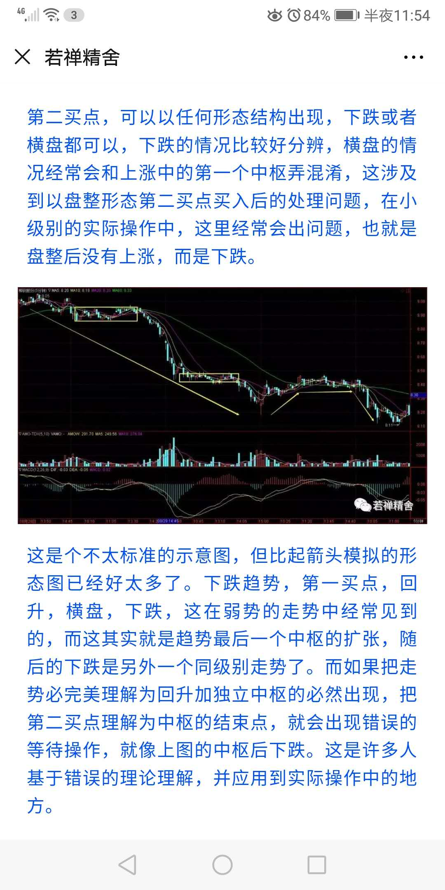
韶山映山红：这种二买介入的，该怎么应对？除了平推离场，还有别的么？
韶山映山红：我只是想搞清楚，陈秋明在这里表达了什么。
陈秋明：ABC三段可以上平平
韶山映山红：随后的下跌是另外一个级别走势，说的是谁的同级别？
陈秋明：第三段走势啊
韶山映山红：趋势下跌，盘整反弹，继续下跌，这三个同级别？还是次级别反弹，次级别盘，次级别下跌？
韶山映山红：我觉得就是趋势背驰之后，本级别反弹，这个反弹只有a+A，没有走出明显的b就结束了。
陈秋明：这也可以
陈秋明：这个图就是说这个问题的
陈秋明：不需要b而A可以很窄
陈秋明：文字都有它的适用范围，这里说的是走势必完美不必然有独立中枢A
陈秋明：其他问题都是次要矛盾
神燕： 我理解静总的意思和用法，但是此处我和他有不同意见。我不认为，那个二买点成立了。形成二买点的走势类型是成立了，就是一个横向盘整，但二买点最后没成立。你们说的a+A最后没有b也对，那是另外一个角度，不是没有b,b与a是相向的，和通常看到的同向不同。
韶山映山红：从走势类型的角度，b与a不能同向。所以我说b没走出来。从操作的角度看，走势必完美就是个梦，就像您的梦三买。
神燕：对呀，我现在所有的买卖点，当下都是梦买卖点，必然的。之后，完成了，才是梦想成真，在趋势图上看着，就是真的买卖点。那都 是事后才能看到的。
独醒（行）者：你为啥纠结于如何应对呢？
神燕：应对就是当下的操作呀，不纠结怎么操作？总不能事后看到是买点了，再回过头去操作吧？
韶山映山红：因为除了止损，不知道怎么应对，怕体系就有漏洞啊。
独醒（行）者：那种情况下，需要结合当时的局势，外界的情况，包括消息面的。也就是走出那个盘整之后，前一段的上涨的消息面没有进一步升温，那回抽的可能性很高。
韶山映山红：我就是缺少其他的，所以现在还是要在技术上完善应对的规则，免得手足无措。
独醒（行）者：上平下，是一种很弱的情况，就是当下的消息面没有进一步升温，市场里面的情绪有波动。导致的市场合力向下，理论上是支持的。平之后的上和下都是可行的，没有什么必然。而且如果是下的话，那就意味着，之前认为的回升上，平，下，这三个已经构成一个完整的三段走势了。也就是说，这个时候，结束反弹是完全可以的了。从这之后，是继续上，还是继续下，完全是另一个走势开端了。当然，也有延续继续下跌的，也有转折向上，更有可能是继续平。这三种情况，都有着市场当下不同的“心理作用”因素。
韶山映山红：大级别的还可以看消息，小级别的就没办法了吧？想起来了，大盘2449那个时候，跳空下来的，然后向上盘啊盘，都挺懵的，然后下来2440，就不太敢动手了。
独醒（行）者 ：是的，小级别的这种波动完全没办法的。但，大局观强的，形势看得准的，就会握着，后面还会继续进仓。
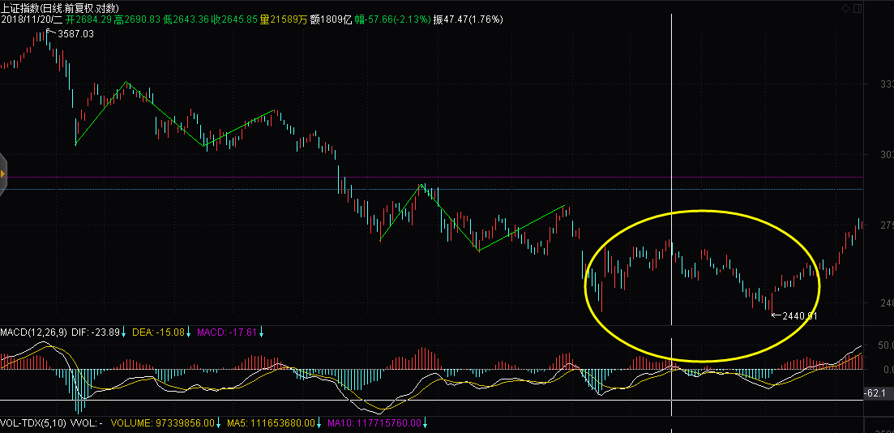
桃花岛主：第一次抄底，次级别大概能看出来，而且本身到了左侧压力位，基本上能出来，后面就是破了一买低点，一样还是买点，不要总想弄在最低，这不现实的，两中枢基本上能见底，已经买在低位了，就是再破还是可以买，分批买，无论是出新一买还是二买，全是买点
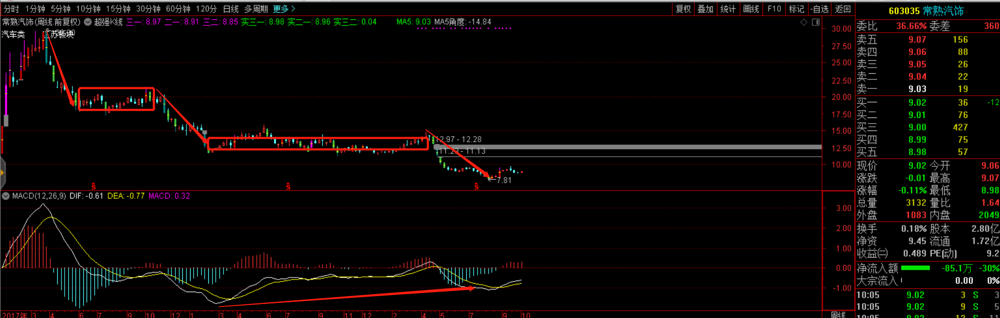
独醒（行）者 ：2440的点反弹走上去，是慢慢发展出来的。那个时候，2440点走到某一个高点，再下探破2440也是有可能的。底部都是反复下探之中，逐步形成的。那个当下，没人知道那个点就是最后的最低点了。都是消息不断被激发，一波又一波地抬高，让大家的心里都接受那个底就是底了，于是那个底就成了大家公认的“心理上的”底。
桃花岛主：太扣理论和顶底了，顶底是用来定位的，作参考的，不是用来交易的，想想原著说的，在大的压力位接了，再砸下来，洗出别人，那个时间至少是一个月到2个月，后面大的拉升，有多少人能熬住，正常人赚20个点就兴奋激动，亏点就晕，要长线，至少要周一买附近，底部亏20个都得挺住，我们技术没有那么厉害，禅师厉害是一个股可以一年两年，几人能做到呢
……
】
显然，第一类买点与第二类买点是前后出现的，不可能产生重合，【韶山映山红】一个是背驰点本尊，一个是追随者。】而第一类与第三类买点，一个在中枢之下、一个在中枢之上，也不可能产生重合。【韶山映山红】一个预示转折，一个预示延续。】
只有第二类买点与第三类买点是可能产生重合的，这种情况就是：但第一类买点出现后，一个次级别的走势凌厉地直接上破前面下跌的最后一个中枢，然后在其上产生一个次级别的回抽不触及该中枢，这时候，就会出现第二类买点与第三类买点重合的情况，也只有这种情况才会出现两者的重合。【韶山映山红】这里是“二三买重合”的第一次正式描述。】
【韶山映山红】有几种意见。 １，这时候趋势背驰的最后离开段不讲究包含第三类买卖点。所以，次级别一段反弹，穿过中枢，回踩不破，就是前走势最后一个中枢的三买。不存在先出三卖不能再有三买的问题。 ２，前走势最后一个中枢没有三卖，不是标准的本级别趋势背驰，算小转大，但也不妨碍一买的存在。 ３，这个三买，不是Ｂ中枢的三买，只是ｃ构成的中枢的三买。】
【韶山映山红】这里说的很清楚，首先要在“第一类买点出现后”，也就是趋势背驰之后，第二类买点是次级别反弹之后的回抽。第三类买点是“前面下跌的最后一个中枢”的三买。这里说的“前面下跌的最后一个中枢”还是有些含糊，不能完全确认就是前面下跌趋势的走势类型的中枢，101课的原文说的是“原来下跌的最后一个中枢开始的震荡走势的第三类买点”，就进一步避开了前面下跌趋势的走势类型的中枢。★可以做个专题，以后研究。】
当然，在理论上没有任何必然的理由确定第二、三类买点重合后一定不会只构成一个更大级别的中枢扩张，但实际上，一旦出现这种情况，一个大级别的上涨往往就会出现。【韶山映山红】这里有两层意思。１，第二、三类买点重合是一种很强有力的转折结构，随后的走势演变是形成上涨趋势。２，在理论上没有任何必然的理由确定第二、三类买点重合后一定会形成趋势上涨，依然有可能只构成一个更大级别的中枢扩张。】 这里说的“大级别的上涨”的大级别是相对谁来说的？】
一个最典型的例子，就是大盘在94年7月底部跌到325点后，8月1日跳空高开，5分钟上形成单边上涨突破前面的30分钟中枢，【韶山映山红】找不到那么遥远的历史数据，所以无法恢复这个实例的分钟级别历史现场，只能在日线图上揣测当时的情景。“5分钟上形成单边上涨”应该是8月1日当天的走势，“前面的30分钟中枢”是谁？应该不是7.07-7.14的震荡，因为后面一天跌破了这个中枢。】
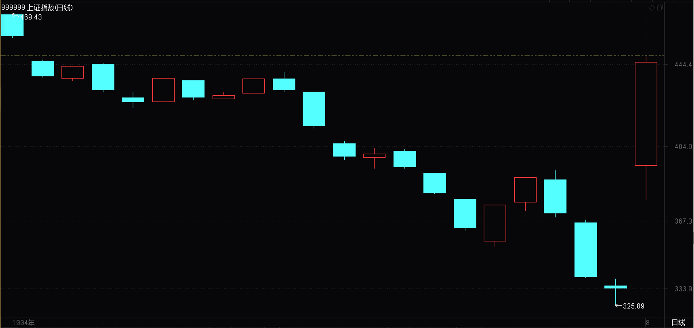
第二天大幅上冲后突然大幅回洗形成5分钟的走势级别的回抽，那时候最高已经摸到快500点，一天半上涨50%，又半天回跌15%，这样的回抽，一般来说是很恐怖的，但如果明白第二类买点与第三类买点的重合道理，就知道这是最好的补进机会，【韶山映山红】“5分钟的走势级别的回抽”应该是8月2日当天的走势，可能是上午继续前一天的大涨，下午回抽形成长上影，并且收阴。这里能看到收阴导致7.07-7.14的震荡中枢被跌破了。那么可以推测，“前面的30分钟中枢”是a+A+b+B+c的c三段所构成的中枢。推测依据是61课讲的74点的二三买重合。】
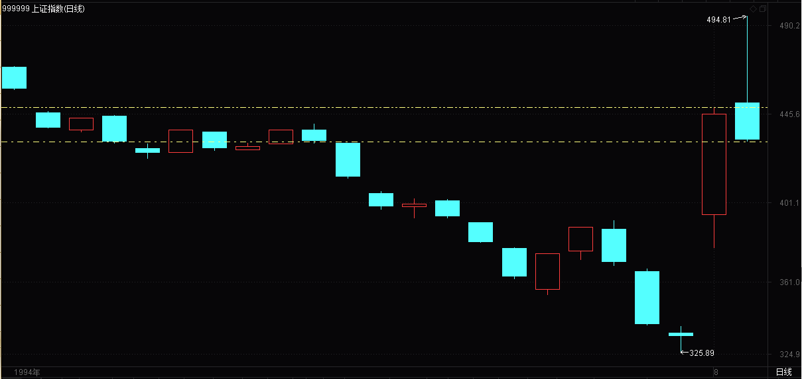
结果第三天又开始单边上扬，
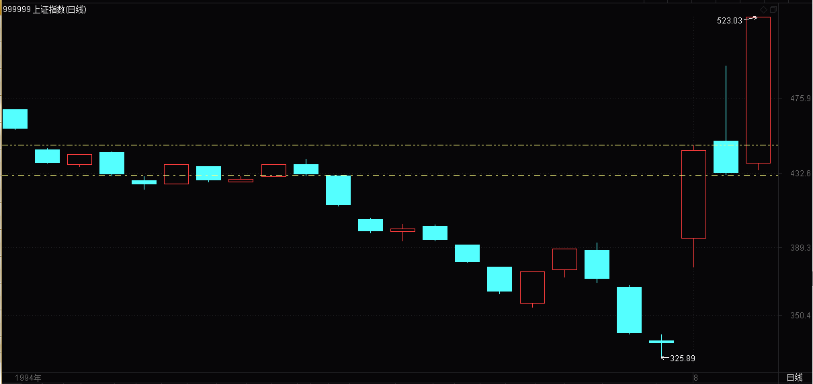
第六天达到750点。
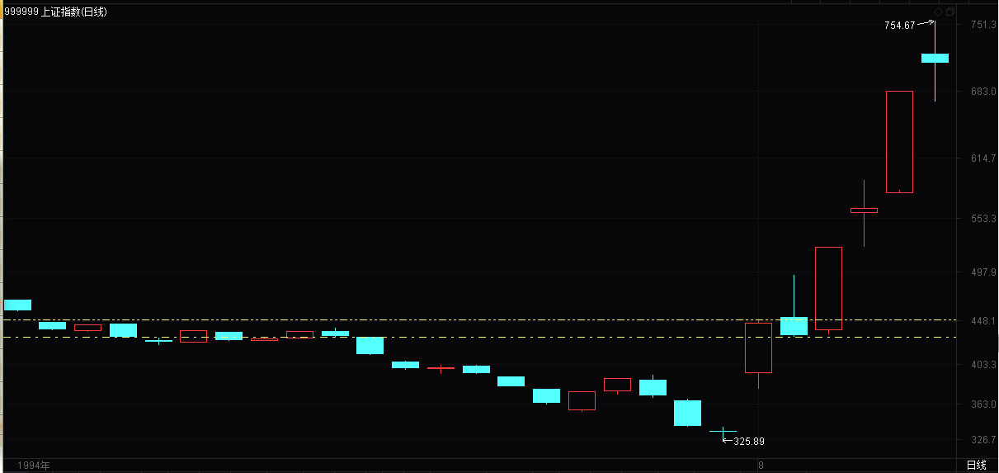
这是指数上最典型的一个例子了。【韶山映山红】前面的平台没有跌破，也是一种强势的表现。完整的描述这个实例，a+A+b+B+c的下跌趋势，趋势背驰，反弹回B中枢，回踩形成二买，跌回了B中枢，没有形成29课所描述的最强转折，但是二买与c三段所构成的中枢的三买重合，依然属于没有中阴中枢的V型反转。】
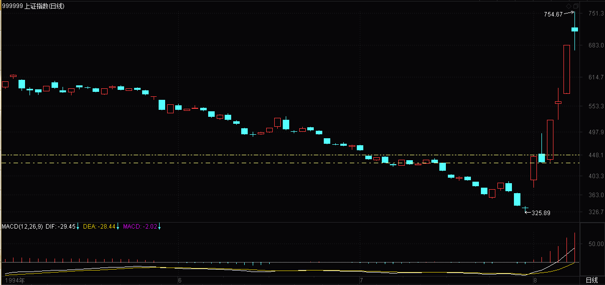
而且，325点留下的缺口至今未补，中国几十年的一个大牛市，从指数上看，这是一个最重要的缺口了，将支持中国股市几十年甚至上百年的大牛市。【韶山映山红】找不到那么遥远的历史数据，所以无法恢复这个实例的分钟级别历史现场。】
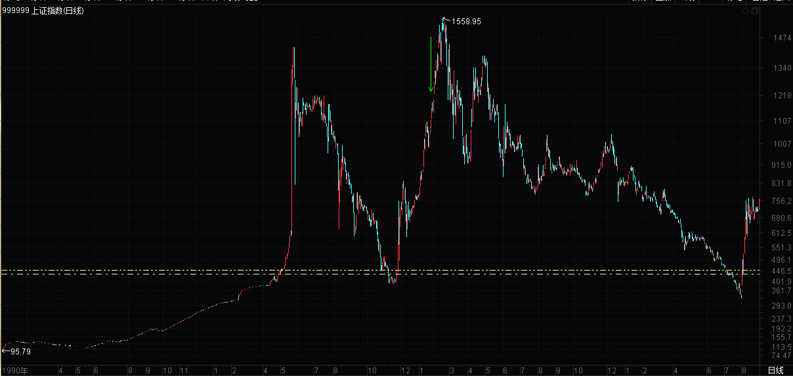
【韶山映山红】 若禅精舍（陈秋明）：
第二与第三买点的结合，并不必然出现大级别上涨，很多人不仅操作时被情绪牵着走，连阅读都会被情绪牵着走，2000字文章看完后只记得上涨两个字太常见。出现连续的大级别上涨，意味着前面突破最后一个中枢的强势走势的延续，而未来的走势是不可测的。二三买的重合，是在操作中较少见到的图形，一旦碰到，要引起足够重视，但决不能因形态而生幻象，让幻象去指导你的操作。
】
补充一句，站在特大型牛市的角度，中国就从来没出现过熊市，大家打开上海的年线图就可以看到，从1992年到2005年，一个完美的年级别缠中说禅中枢的三段次级别走势完成，时间刚好是13年，一个完美的时间之窗。站在年线的角度，中国股市的真正大牛市才真正开始，因为该中枢是中国股市的第一个年中枢，区间在998到1558点。
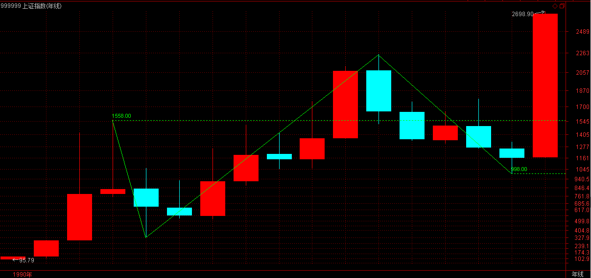
站在年线级别，在下一个年线级别中枢确立之前，中国股市的调整只可能出现一个季级别的调整，而第一个出现的季级别的调整，只要不重新跌回1558点，就将构成中国股市年线级别上的第三类买点，其后至少出现如去年类型幅度的上涨。由此可见，本ID的理论是可以站在如此宏观的视角上判断大趋势的。【韶山映山红】实际上后来走成了很弱的扩张。】
目前中国的股市没有任何可担心的地方，即使出现调整，最多就是季级别的，其后反而构成第三类买点。而且更重要的是，站在年线的级别看，目前还在第一段的次级别上扬中，要出现第二段的季级别调整，首先要出现月线级别的中枢，目前连这个中枢都没出现，换言之，年线级别的第一段走势还没有任何完成的迹象，这第一段，完全可以走到6000点才结束。
今后十几年，中国股市的辉煌，用本ID走势必完美的原则，会看得一清二楚。该原则无论是对年线还是1分钟线，都一视同仁，这就是缠中说禅技术分析理论厉害之处，这叫大小同杀，老少咸宜。
【韶山映山红】 若禅精舍（陈秋明）：
12、23、34，三段次级别走势段，构成年线级别中枢，45是向上的离开段，但遗憾的是，即使45段并不是背驰段，仍然没有形成年线级别的上涨趋势，56段的回抽，构成对1-4中枢的第三买点，但6位置已经低于位置3，后续的上涨与45段相比是背驰段，7之后的下跌段，目前还不能确认完成，但并不必然回到3位置，原因就在于45段并不是盘整背驰段。整个年线图就存在了另外一种可能的结构。
经过重新组合的结构，是年线级别的上涨+盘整+上涨结构，而这只是根据当下的走势结构，对未来的分类之一，显然，这是目前为止，中国A股年线图最理想的预期分类。
只要是浏览分析过全球多个国家的股市，以及大宗商品的走势，就必然会发现20年线的作用，目前上证指数的20年线在2438点，该线的支撑作用以及对跌破后的吸引作用，将在未来的走势中体现。
对于缠论来说，走势结构的分析，与级别并没有太大关系，无论是什么级别，其盘整与趋势的走势结构，无非就那几种，所以就买卖点来说，与级别是无关的。而所有的买卖点，都在各个级别上不断的重复上演。
】
对卖点的分析是一样的，归纳起来，就有缠中说禅买卖点的完备性定理：市场必然产生赢利的买卖点，只有第一、二、三类。
相同的分析，可以证明缠中说禅升跌完备性定理：市场中的任何向上与下跌，都必然从三类缠中说禅买卖点中的某一类开始以及结束。【韶山映山红】趋势之后的转折起始于第一类买卖点或第二类买卖点。盘整走势之后的涨跌起始于第三类买卖点。】
换言之，市场走势完全由这样的线段构成，线段的端点是某级别三类缠中说禅买卖点中的某一类。【韶山映山红】同一个级别的走势图上的线段两端，不一定是同一个级别的买卖点，而是“某级别”。比如30分钟图上的一个转折点，不一定是30分钟的买卖点，可能是5分钟、1分钟级别的买卖点。】
思考题：
任何一个线段，其端点必然是一买点及一卖点，请完全列出各类买卖点之间可能的组合。
【韶山映山红】所谓“任何一个线段”，就是某级别走势划分的时候，该级别的一个走势类型，相当于做同级别分解，只有该级别的线段，不考虑该级别的走势，也不看更低级别的内部结构。】
【韶山映山红】假设每一个线段都是5分钟走势类型，那么两端都是5分钟的第一类买卖点和第二类买卖点的组合搭配：B1'-S1'，S1'-B1'，B1'-S2'，S2'-B1'。站在30分钟的角度看，一段走势里会有30分钟级别的一二三类买卖点分布其中，其他不是30分钟级别买卖点B1、B2、B3、S1、S2、S3的端点，就只是5分钟级别的一二类买卖点B1'、B2'、S1'、S2'。这样排列组合就行了。
次级别两端：B1'-S1'，S1'-B1'，B1'-S2'，S2'-B1'
B1点和两端：B1-S1'，B1-S2'，S1'-B1，S2'-B1。
B2点和两端：B2-S1'，B2-S2'，S1'-B2，S2'-B2。
B3点和两端：B3-S1'，B3-S2'，S1'-B3，S2'-B3。
S1点和两端：S1-B1'，S1-B2'，B1'-S1，B2'-S1。
S2点和两端：S2-B1'，S2-B2'，B1'-S2，B2'-S2。
S3点和两端：S3-B1'，S3-B2'，B1'-S3，B2'-S3。
然后还有30分钟本级别的买卖点组合。除了下面绝对不可能出现的组合之外的：
一买后有三卖：B1-S3，S1-B3。
二买后有一卖：B2-S1，S2-B1。
二买后有二卖：B2-S2，S2-B2。
二买后有三卖：B2-S3，S2-B3。｛新走势类型的二买，前走势类型最后一个中枢的三卖。｝
三买后有一卖：B3-S1，S3-B1。
三买后有二卖：B3-S2，S3-B2。
】
如果一线段的端点是同级别的买卖点，有什么组合是绝对不可能出现的。
【韶山映山红】
一买后无一卖：B1-S1，S1-B1。
一买后无二卖：B1-S2，S1-B2。
三买后无三卖：B3-S3，S3-B3。
】
【韶山映山红】线段进化史01
市场中的任何向上与下跌，都必然从三类缠中说禅买卖点中的某一类开始以及结束。 换言之，市场走势完全由这样的线段构成，线段的端点是某级别三类缠中说禅买卖点中的某一类。
思考题：任何一个线段，其端点必然是一买点及一卖点，请完全列出各类买卖点之间可能的组合。如果一线段的端点是同级别的买卖点，有什么组合是绝对不可能出现的。
这里是原文第一次出现“线段”的说法，没有对线段做任何描述。我们可以从原文反过来推导什么是线段：
１，线段是买卖点之间的连线，任何一个线段，其端点必然是一个买点及一个卖点。
２，买卖点都是有级别的。线段两端的买卖点大部分都不是本级别的。只有低级别的第一类买卖点才会成为高级别的买卖点。换句话说，不会小转大，就不会缠论。
３，站在某级别的角度，线段两端的买卖点都可以视为本级别的，这就是线段盘整背驰的买卖点。如果我们看不到更低级别的情况，就只能根据结果去判断，这就是线段的小转大买卖点。
大盘没什么可说的，
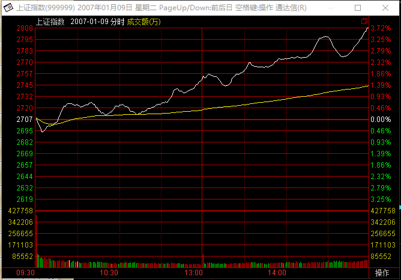
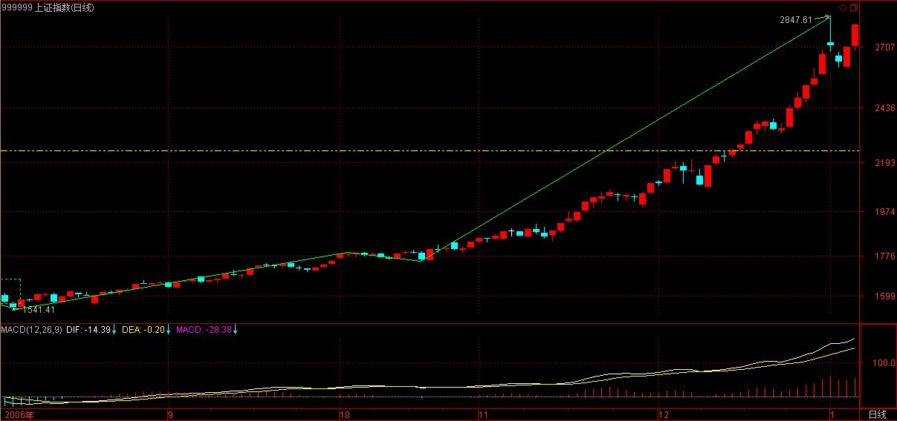
人寿开在40附近，短线有所震荡是正常的，最主要换手不足，太惜售，短线的关键就是要把这些人吓出来。【韶山映山红】601628中国人寿。发行价18.88元。2007-01-09上市。开盘价37.00元。最低价37.00元。最高价40.20元。收盘价38.93元。成交319.0万，总额123.8亿，换手53.17%。】
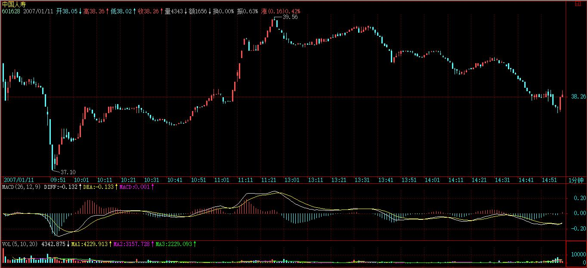
中线该股一点问题都没有，看看茅台上市时多少钱，现在多少。【韶山映山红】600519贵州茅台。发行价31.39元。2001-08-27上市，开盘34.51元。问答当日不复权2007-01-09收盘价88.79元。后复权385.76元。】中国最大的资源就是人，人寿搞的就是人，没有人，酒也废了。
各位关键在持住股票，好像本ID发梦时说的某药，短短10个交易日，上涨40%，过两天一算还要多，但能持住的有几个？做人专一点，别前戏都没开始就早泄了。【韶山映山红】000999三九医药，2010.02.24变更为华润三九。】
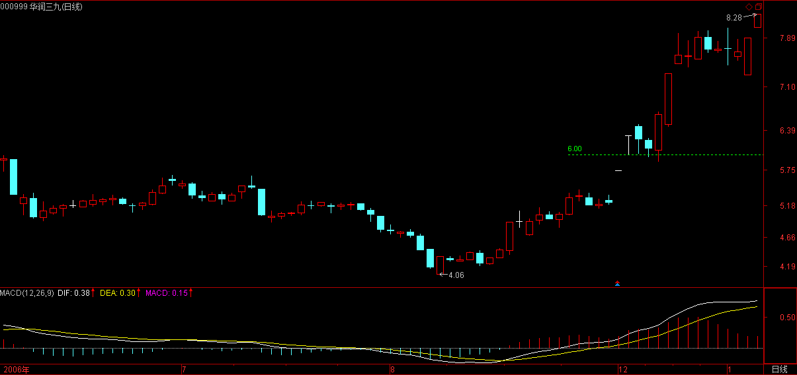
今天下午有事，有问题的请放下，晚上回答。
2007-1-9 15:13
就算是419，也要把前戏、高潮弄足了，牛市一定不能当早泄男。
先下，再见。
2007-1-9 15:16
[匿名] 悠悠悠哉 2007-01-09 16:29:45
大姐 你讲的那3类买卖点 在你以前的那些文章里的啊？ 我找过了 找不到 告诉我一下啊 很多人也想知道的啊！
=========
认真读过前面文章的，都不应该有这样的问题。
面对市场，不经过一番洗心革面，是不可能战胜市场的。
市场里，任何的侥幸都只能是暂时的，而且会被市场所加倍索还。
2007-1-9 21:09
沉醉 2007-01-05 22:39:29
有关背驰. 002003伟星股份的问题,可能是一典型问题.
从06年12月11日10:30分到12月22日10:00分这一段.出现了女上位的五次缠绕.
12月14日10:30分到12月15日14:30分与12月15日14:30分到12月20日10:00分相比,在图上是MACD,红柱是增长的,黄白线也是上升的,其均线形成的面积也是增大的,; 而12月15日14:30分到12月20日10:00分与12月20日14:00分到12月22日10:00分相比, 也是MACD,红柱是增长的,黄白线也是上升的, 其均线形成的面积也是增大的.没有背驰产生,但股价却在22号10:30急跌,象这样的情况如何把握. ?
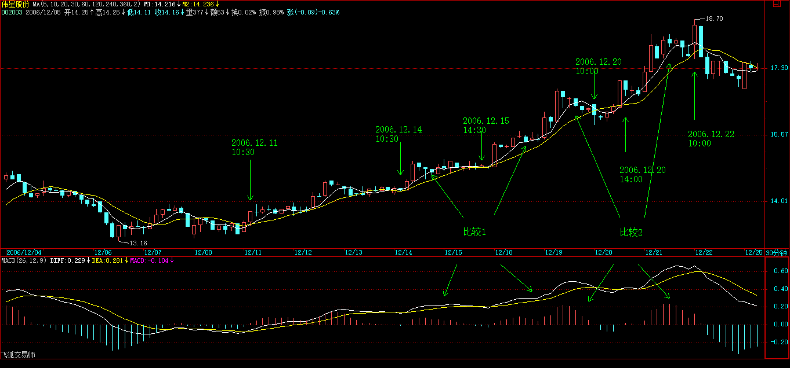
当然, 在22日10:00时产生了一个新高价,而这片红柱有所缩短, 按理是要关注的情形,不过,对比20号10:30分的情况也是同样的,也是新高价后红柱缩短,且更为明显,,但在之后,却是创出新高.
这两种非常类似的图形,如何把握其卖点呢? 就仅指在30分K线图上.
----------
wy1499 2007-01-09 19:25:49
沉醉 你对伟星股份走势的疑问，我也同样碰到了，就以前缠MM曾提到的北辰在11.7-12.6的涨势中也出现过，在30分钟图上，无论从均线走势力度还是MACD指标，11月13日11点时涨势已形成背驰，可后面却迭创新高，证明这其实是个中继，如果不是事后看图，我很可能选在11.13出货了，
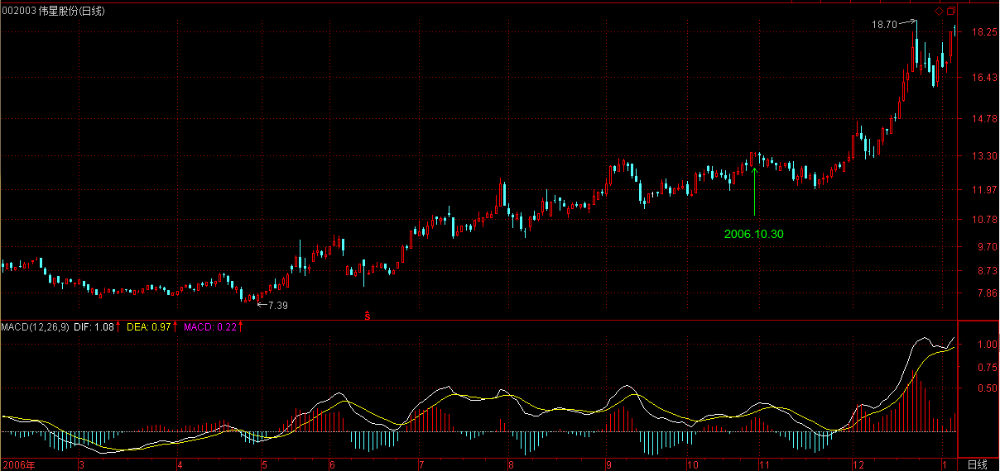
个人觉得对于买卖点的把握还要掌握其他方面的知识，缠MM说过真正的高手的功力在于中继和转折的判断上，我现在就是经常把中继错判成转折，特别是在小级别图上，不过结合大级别图，减少操作频率，成功率可以高一些，当然喽，最好的办法还是期待缠MM的后续内容吧。楼主觉得我的看法，对吗？
对了，楼主以前提示过时间之窗，那是在日线图和30分钟图上以一个月为准，怎么到大盘的年线上变13年了，两者有什么数学关系吗？
=======
时间之窗又不是只有一种。以后会说到的。【韶山映山红】缠论没有关于时间之窗的正式内容。可以做个专题。以后研究。★】
2007-1-9 21:10
[匿名] 无知 2007-01-09 20:35:57
缠姐，我资金量比较小，今天没买国寿，有没必要卖掉不太动的股票买进国寿啊 ？
===============
本ID 10几天前不已经有一个关于药的梦，那个梦就是为各位小资金们准备的，买了以后就一直等着，继续学论语、学技术、学其他。怎么都不明白呢？
【韶山映山红】000999三九医药，2010.02.24变更为华润三九。】
本ID随便发一个梦，你就进入梦乡，耐心地等待最后至少把1变成2、3的，期间就好好学习、天天向上，为什么要整天跑来跑去？
人的贪婪总是很可笑的，为什么一定要每天都发一个梦，一个梦让你把1安全地变成2、3，难道还需要其他的梦吗？那些每天发一个梦的人，最终能把1变成2、3吗？
本ID新来的那一笔资金其实弄了5只股票，这个药已经是最安全的，10个交易日让你从1变成1.4，不敢说是最牛的，肯定也是最近比较牛的了。本ID另外4个都不愿意说了，只要其中一只就能达到目的，没必要说那么多了。【韶山映山红】000999三九医药，2010.02.24变更为华润三九。】
当然，本ID也可以把其他四只说出来，其中两只和那药一样，都是深圳的，本ID比较懒，现在代码太多，懒得记，都找的是代表只有两种数字的，另外两只，和这三只里的其中两只代码相连。
这5只股票，最终都像去年的酒一样的，这肯定是无疑的。但各位如果资金小的，买一只就够了。如果有药，就存放好，小心受潮。
各位，专一点吧，每天跑来跑去的，一定挣不了大钱。
至于人寿，如果你专一，一定没问题，如果你不专一，肯定受折磨。
2007-1-9 21:25
去年成绩不好的，归根结底都是心态问题，先把心态调整好，别整天希望天上掉馅饼，而有时候真的天上掉馅饼了，又抓不住，这样怎么可能挣钱？
【韶山映山红】上证指数2006年全年日线图。】
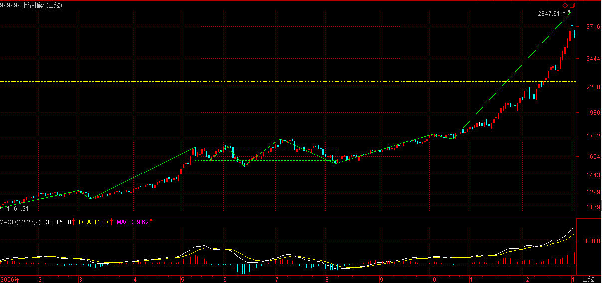
2007-1-9 21:32
[匿名] 学习 2007-01-09 21:26:44
LZ,形成更大级别的中枢,其区间是两个区间的总和吗?
====
例如原来是日线的，现在变成周线的，那就在周线上找次级别也就是日线上三段走势，按中枢的公式去确定，并不存在两个区间总和的问题。【韶山映山红】中枢的公式指的是中枢区间的数学表达式：ZG=min(g1、g2)，ZD=max(d1、d2)。这里又拿K线图的周期来冒充级别了。按这个说法，中枢扩张形成更大级别的中枢，并不表示两个中枢就完成了更大级别的中枢，这是很常见的误区。升级只表示需要变更更大级别的显微镜去分析走势，要在大级别的角度划分次级别的三段走势。换句话说，在大级别划分不出次级别的三段，不符合中枢的要求，就不能算升级。】
2007-1-9 21:37
[匿名] 舍小赢大 2007-01-09 21:32:50
楼主腐败回来了 我对工行的背驰判断对吗
[匿名] 舍小赢大 2007-01-09 16:38:14
缠MM 工商银行 5分钟K线图上已经是女上位背驰了 我的判断正确吗？
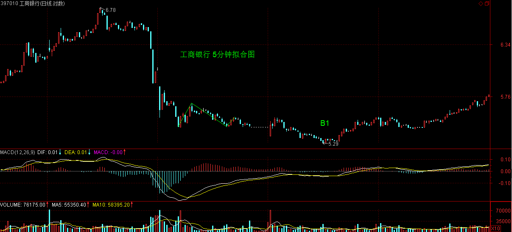
===
要学会从大角度看问题。【韶山映山红】意思是说，不要止步于一个简单的多空判断，尤其是很小级别的，要进一步学会做走势分析，学会从大到小的思维角度。】
工行这次下来的调整，必然需要一个走势类型完美的问题，例如一个日线级别的调整，就必然在30分钟上有三段走势，【韶山映山红】如果构成一个调整，就要走完次级别的三段，形成一个回踩中枢，才算完美。只有次级别的一段向下的，就是低级别的调整。】
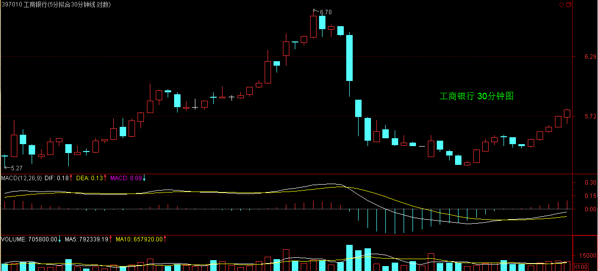
想想现在是第几段，意味着什么？【韶山映山红】5分钟级别已经走出一个下跌趋势，也就是说，30分钟向下的一段已经形成，向上的一段还在走。】这样就能很从容地安排自己的操作了。
只有定好大方向，才有必要看小细节。【韶山映山红】走势是从小向大走出来的，但需要大处着眼辨别方向。】
2007-1-9 21:41
[匿名] 无言 2007-01-09 21:39:47
缠姐,好人啊!功德无量!不但不收学费,还提供饭票.虽然不知缠姐的票是什么,但自从学了缠姐的理论,现在每天稳定收益3个点.谢谢!
===
本ID原来的想法是，各位如果资金都不太大，要好好学习又不安心，整天想去找工作吃饭，就提供一剂药给大家当饭吃，让大家安心学习，现在看来，不知道有多少人理解本ID的意图了。
偷心不死，是学不了真工夫的。【韶山映山红】所谓偷心，就是自己不愿意下功夫去努力，只想着捡现成的，比如跟着大牛去买的行为。】
有时候，把药煮好让大家吃，估计也不一定有用的，关键还是人自己，本ID的理论也如同那药，就算大家都知道都明白，实际操作下来，好是看自己的心态。
统计一下，有谁能在6元上下买那药，现在还放着，然后安心学习研究的？【韶山映山红】000999三九医药，2010.02.24变更为华润三九。】

2007-1-9 21:47
[匿名] 不争而胜 2007-01-09 21:46:45
LZ您说资金量30W的持股最好不要超过3只，我根据您的理论抓来抓去收藏了一大把，虽都有赢利，但想专一点，您能否帮忙剔除一些。【韶山映山红】所谓偷心不死，就是这样的。下面按缠师回答的，用周线配图。】
600824，配股后5块5左右进；【韶山映山红】600824益民百货,2007-10-12变更为益民商业，2010-11-26变更为益民集团。】
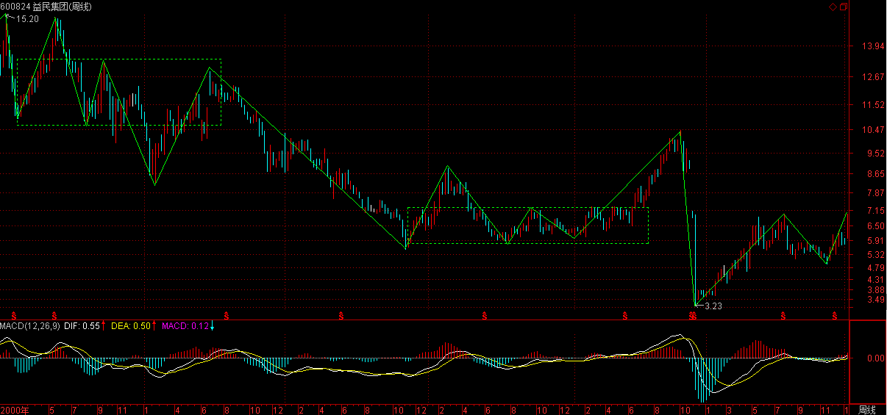
000928，4块9进；【韶山映山红】000928中钢国际。周线。】
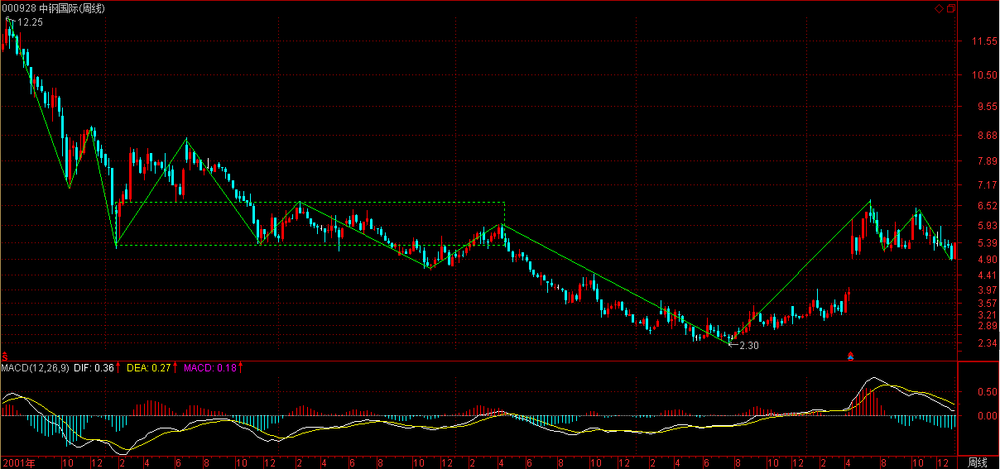
000520，3.2【韶山映山红】000520长航凤凰。】
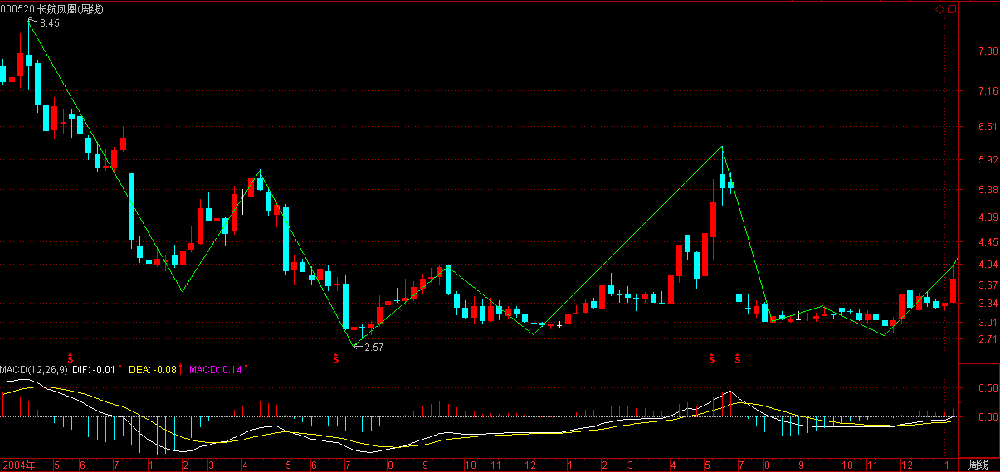
000429,4.7【韶山映山红】000429粤高速A。】
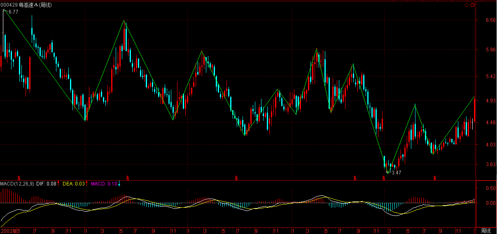
000100,2.2【韶山映山红】000100 TCL集团。】
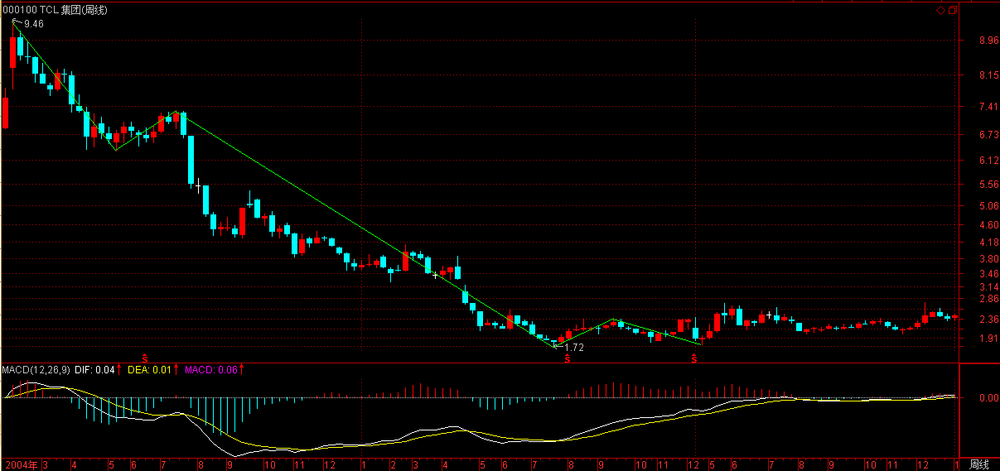
谢谢您了！
===
告诉你原则，然后自己思考，才有进步。
站在周线的角度，一个漂亮的第一类买点与第二类买点相组合的，都应该持有。【韶山映山红】周线上的一买大多是盘整走势类型的。】
目前很多股票，站在周线角度，都出现第一类与第二类买点，面临突破，这些股票在今年一定会有好表现的，【韶山映山红】出现一买二买了，却还没有突破，也就是后面课程所说的中阴阶段。】
什么时候加速？就是在周线、或至少在日线上出现第三类买点，然后就进入加速。【韶山映山红】三买出现之后才能初步明确当前的走势。周线三买是本级别三买，日线三买是强三买。】
符合以上要求的，都应该保留。
如果一个股票，在周线或至少在日线上出现第三类买点了，那就一直持有等待相同级别或至少是次级别的第一类卖点出现。【韶山映山红】日线三买，就等待日线一卖，或者30分钟一卖的小转大。】
股票其实就这么简单。当然，如果你短线有时间，就按更低级别的图打短差，如果没时间，也没必要干了。【韶山映山红】“按更低级别的图”，这时候还是用K线图的周期冒充级别。】
2007-1-9 21:57
太晚了，先下，各位好好休息，好好思考，一定要在心里建立自己坚固的港湾，才可能在实际操作中从容面对风浪。
再见。
2007-1-9 22:00
(2007-01-10 15:49:21)
态，古字上“能”下“心”，能心心能也。【韶山映山红】“态”的繁体字是“態”。】何谓能心？无所住而生其心也。何谓心能？其心生而住所无也。世之痴人，以“无所住而生其心”为圣为解，以“其心生而住所无”为凡为缚，于圣凡自生分别，翳眼生花，可叹可怜。复有痴汉，求一清净之常态，谓之安心。岂知安心者，心也，以心求心，相缠相续，即清如朗月、净似幽潭，犹鬼窟活计，自欺欺人。
能心者，心也；心能者，心也。心无可安，无心可安；心无所住，无心所住。心心相心、心心心相。安者，心也；住者，心也；解者，心也；缚者，心也；生者，心也；灭者，心也；是心，心也；非心，心也。心无所心，无心所心，犹心也。心而能心，心而心能，能心心能，态变乾坤。
今天继续补涨，三线成分股表现，这十分符合轮动的节奏。但轮动能否继续，关键就看工行等能否重新走强，不行的话，就要进入一个至少30分钟，甚至日线级别的调整。
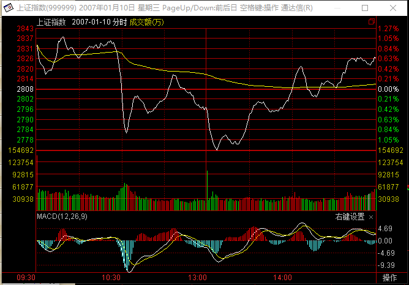
最近的大涨，使得反压言论开始冒头，这是考验管理层智慧的时候了。如果管理层不干傻事，日线级别的调整就足够了。调整时，非成份股会出现补涨，短线机会还是很多的。
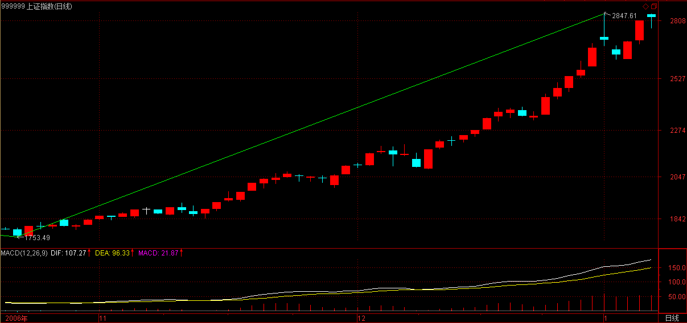
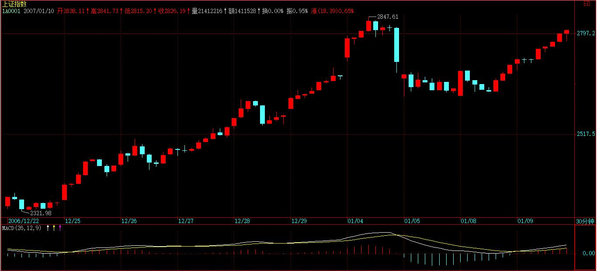
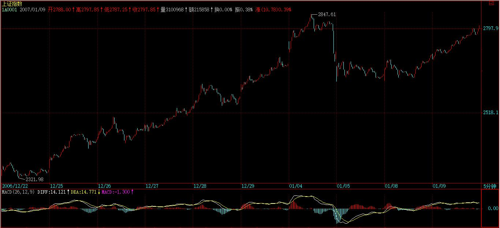
2007-1-10 16:22
[匿名] 淡定 2007-01-10 15:56:37
沙发，楼主，怎么不回答俺000001的问题啊
=======
什么问题？
2007-1-10 16:24
[匿名] WHQ999 2007-01-10 16:12:41
DING!来报到.今天工行好像没完成任务啊.
今天心态不好,把我的招船卖了点买了泸天化,反不如不换,其实不该乱换股的,''反省.
【韶山映山红】601872招商轮船。】
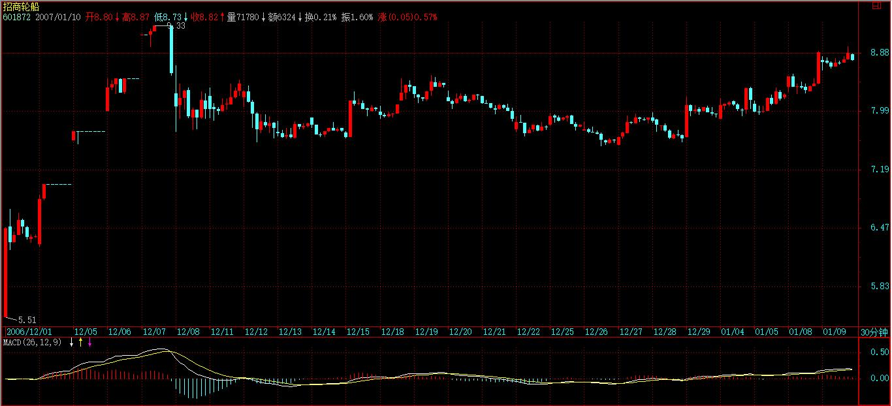
【韶山映山红】000912泸天化。】
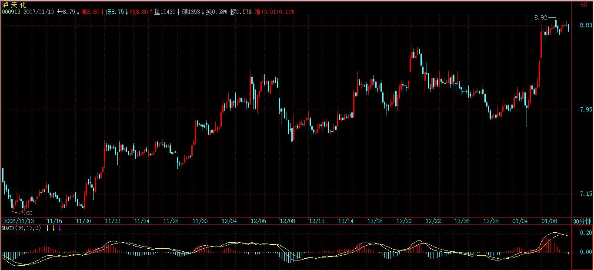
====
买了股票，就一定要从买点一直持有到至少是同级别的第一卖点。【韶山映山红】要有自己的操作级别。】
除非你的短线技术特别好，否则就不要乱动，没必要为券商打工。
2007-1-10 16:26
[匿名] whq999 2007-01-10 16:25:09
只要不追高,严格按买点买入,不会有大问题的.
现在上海,深圳指数走势有差异,缠妹指导一下以那个为主判断后势呢??会不会近期形成日级的中枢呢??
【韶山映山红】上证指数调整后没有新高。】
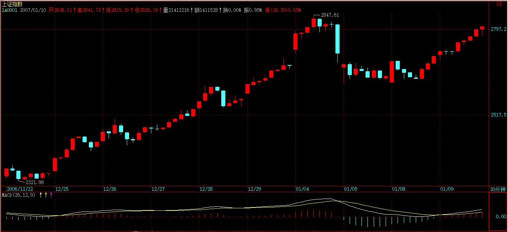
【韶山映山红】深证成指新高了。】
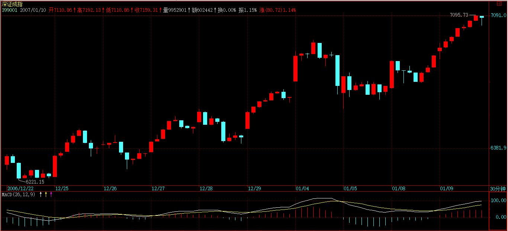
=======
都一样，关键两个市场不要背离就可以。
2007-1-10 16:28
[匿名] 潜龙勿用 2007-01-10 16:27:06
缠姑娘好！
到穷山僻壤出差几天没能上网分享你的智慧了，今天倍感亲切。
我今天发现中信海直000099在周线上有第二类买点，所以在4.39进入，到今天收盘已有所收获。不知判断对否？【韶山映山红】000099中信海直。】
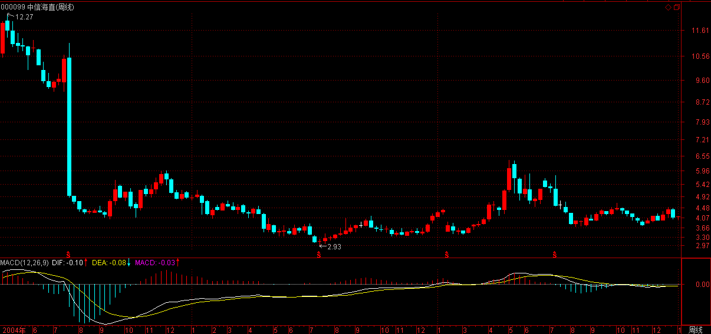
===
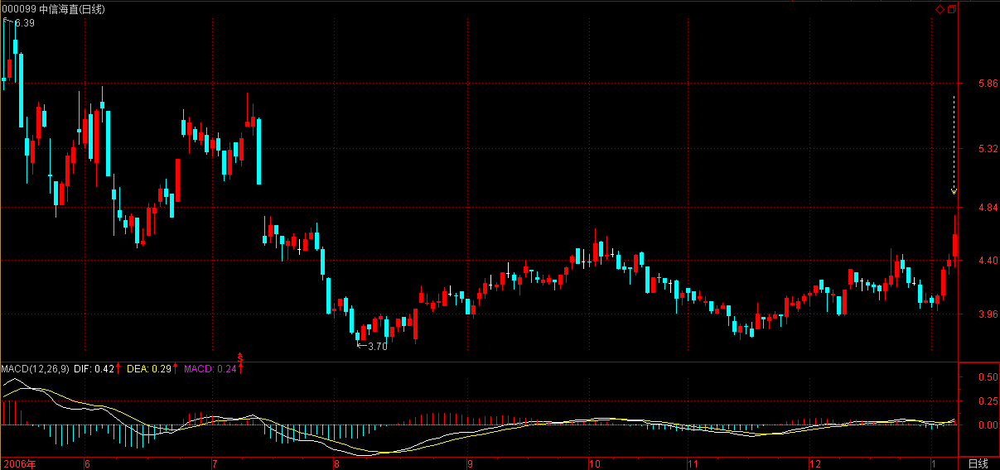
买的高了点，4元随便买。
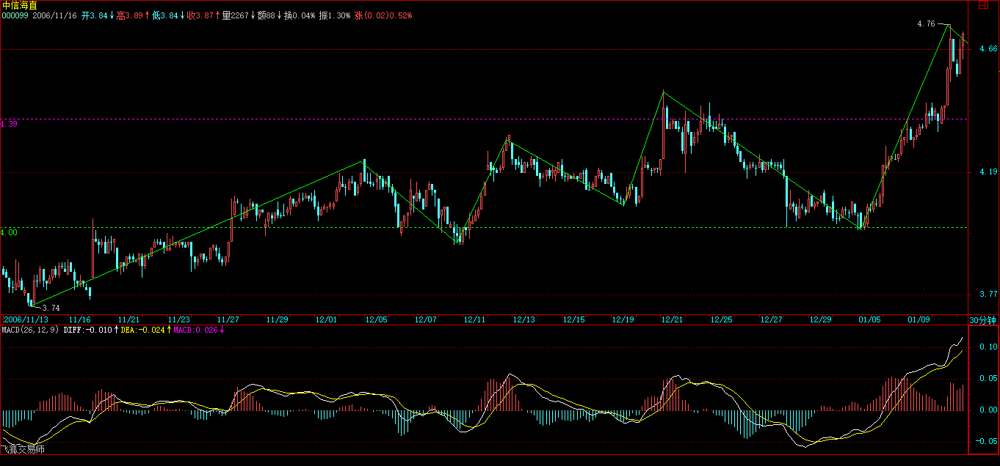
任何买点，都应该在回跌的时候介入，而不是追上去。只是回跌的级别不同而已。
2007-1-10 16:32
各位没必要知道那么多股票，
本ID的第二只股票是5个0中间一数字的能源股，题材是整体上市，都涨那么多，本ID也不好让各位买了。前几天是一个标准的第三类买点。当然，本ID资金量大，不可能在一个精确的点上买。【韶山映山红】000600建投能源。整体上市题材。】
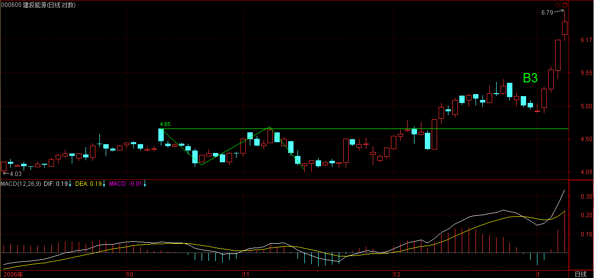
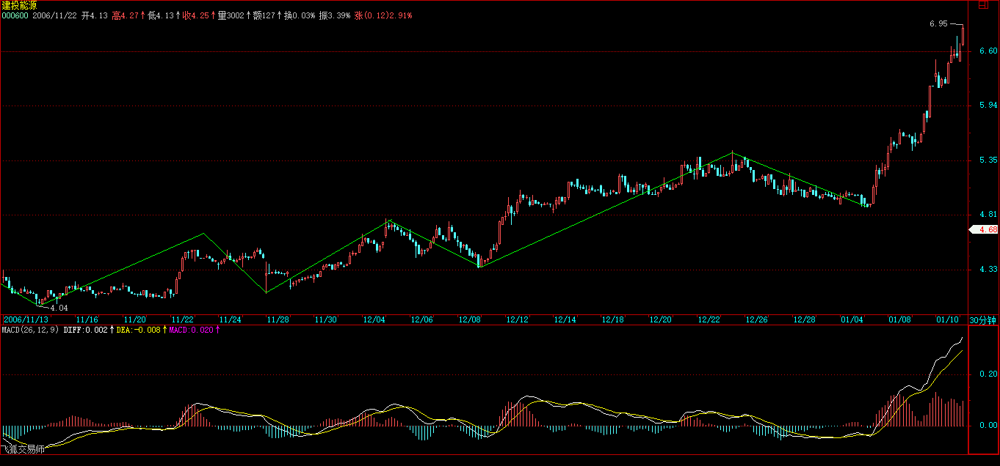
第三个是前面三个0，后面三个相同的另外数字的江浙的股。【韶山映山红】000777中核科技】
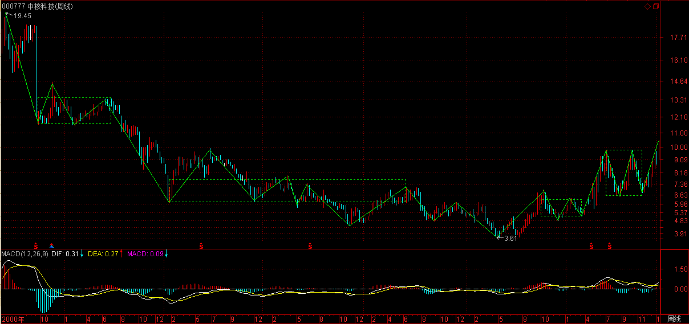
第四和第三后5个数字都相同，就前面一个不同。【韶山映山红】600777新潮能源。2016-07-06变更为新潮能源。】
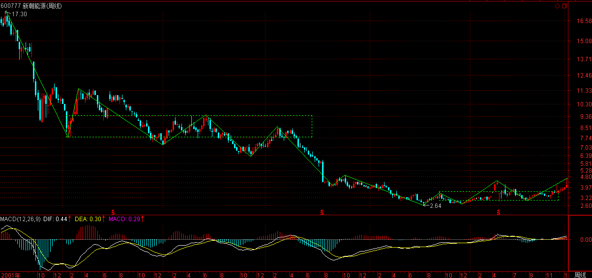
第5个和第三个最后一个数字不同的300样本股。【韶山映山红】000778新兴铸管】
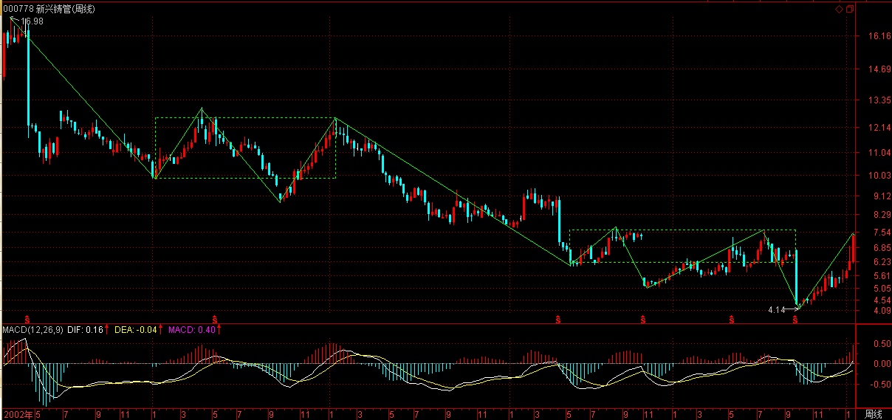
算了，最快一个已经第一时间告诉了，都拿不住，这四个可没第一个牛，知道了也没意思。
注意，本ID现在可不当什么庄家，只是喜欢抽庄家血。
还有，这笔后来的钱只占本ID的一小部分，本ID的大部队可不在这里，大部队早就进去了，现在都没影子地高了，更没必要知道了。
2007-1-10 16:48
[匿名] 淡定 2007-01-10 16:39:46
000001还可以搞吗？
【韶山映山红】000001深发展A。2012-08-02变更为平安银行。】
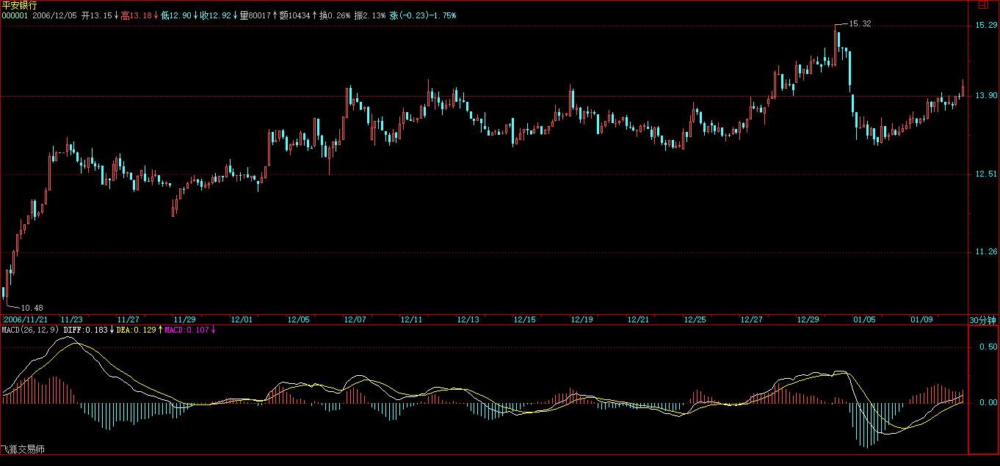
===
不应该这样思考问题，而是要问自己，他在什么级别上有第一、二、三类买点，该级别值得介入吗？
2007-1-10 16:51
今年的钢铁等于去年的有色
今年的药等于去年的酒
今年的什么等于去年的银行？
2007-1-10 17:00
[匿名] 淡定 2007-01-10 16:39:46
000001还可以搞吗？
=========
缠中说禅
不应该这样思考问题，而是要问自己，他在什么级别上有第一、二、三类买点，该级别值得介入吗？
=========
[匿名] 淡定 2007-01-10 17:00:28
惭愧啊楼主，我是6.5介入到现在的，现在走也不是留也不是，所以请楼主指点啊
============
那就该继续拿着，还S着，急什么？当然，短线技术好，可以打点短差【韶山映山红】没有完成股权分置改革的股，称为Ｓ股。】
【韶山映山红】000001深发展A。2012-08-02变更为平安银行。】
2007-1-10 17:02
[匿名] 青皮六 2007-01-10 17:00:16
今天不请教股票,女禅师曾说,可请教任何问题,冬季来临,老人故去的特别多,家中亦有老人故去,念其一生颇多感慨.孔子说,未知生焉知死.陶渊明说:亲戚或余悲,他人亦已歌.死去何所道,托体同山阿.女禅师世外高人,学识渊博,不知如何看待生死
=============
生死之！
2007-1-10 17:03
[匿名] 小明 2007-01-10 17:02:54
突然发现000666竟然走的也相当漂亮！
【韶山映山红】000666经纬纺机。】
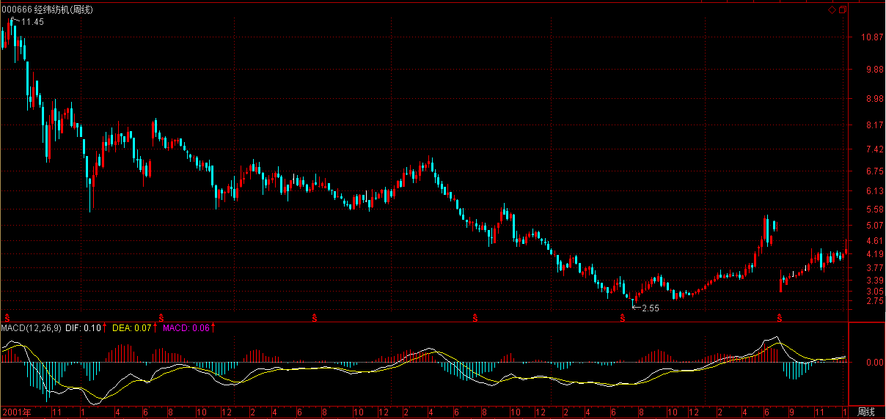
===============
低价股都要补涨的，现在的低价股自然是遍地机会。
2007-1-10 17:07
如果有资金量大点的，可以参考一下那5只股票12月20日以后的走势，看看本ID是如何把可以让8亿农民一人一口的大米藏到这5个庄家的肚子里的。
至于资金量小的，就算了，好好找好精确的买点。
2007-1-10 17:17
先下了，晚上再说。
2007-1-10 17:18
[匿名] 快 2007-01-10 15:58:24
数女,任何看待A股与H股的严重分化呢?
=========
香港是中国的一部分而不是相反。
2007-1-10 20:42
[匿名] laoliu 2007-01-10 19:15:42
可不可以这样理解，在一个买点和一个卖点之间买入，只要能在卖点卖掉，都是有利可图的。这样就可以理解为缠ＭＭ推荐的股票还可以买，只要没到卖点
===
就在买点买，卖点卖，当然，买点并不一定是一个点，一个价位，级别越大的，可以容忍的区间越大。
之间之类的概念是模糊的，卖点还没出现，什么叫买点和卖点之间？
以后会说到如何精确地控制买点的区间的问题，这里就不详细说了。【韶山映山红】如何精确地控制买点的区间？背驰段和区间套分析。】
2007-1-10 20:47
wy1499 2007-01-10 18:44:05
楼主，想请教个问题，我最近一直一边做股票，一边在玩股指期货的仿真交易，我发现期货的走势和股票也是相通的，但是因为保证金制度收益率要远远高于股票，楼主这么大的资金为什么不去做期货？以楼主的身份要做港股的期货应该是没什么制度障碍的。
我猜测是不是大牛市做股票风险更小，收益也有保障；而熊市里期货可以做空，这时候更能派上用场，请问是这样吗
============
你怎么知道本ID不玩期货？
股票的风险小，最大的风险就是法律风险，除此之外，对于大资金，真没什么风险了。
但期货不一样，期货是不能说的。一旦火星碰地球，那一定要死人才能完事的。
2007-1-10 20:51
[匿名] YY 2007-01-10 17:09:06
缠中说禅 2007-01-10 17:00:51
今年的钢铁等于去年的有色
-------------------钢铁已经涨了那么多了，还能涨？
===============
去年的有色是跨年度行情，上半年疯狂后就歇了，钢铁为什么不能这样？
今年的药等于去年的酒
==============
去年的酒是全年一路涨，今年的药为什么不可以？
今年的什么等于去年的银行？
-----------是不是煤炭股？
============
银行为什么涨，就是因为海归以及战略位置的重要，要和银行一样，至少也要有这两个条件。
2007-1-10 20:58
各位注意，本ID之所以今天说那5只股票，只是为了明天上课的需要，这可是现场版本，因为明天要说说如何利用买点，特别是第三类买点阻击庄家的一些小方法。本ID从12月20日开始，现场直播给各位看了，那药是绝对的现场版本，其他四只，各位看看，看能看出点什么。【韶山映山红】000999三九医药，2010.02.24变更为华润三九。】
注意，为了避免不必要的法律纠纷，本ID一切关于具体股票的言论，都是在说梦话，千万别相信。
2007-1-10 21:03
[匿名] kkk 2007-01-10 21:01:37
但期货不一样，期货是不能说的。一旦火星碰地球，那一定要死人才能完事的。
－－－－－－－－－－－－
楼主的意思是期货只讲资金大小而不完全靠技术是吗?一旦对垒起来,必有一方死球是吗?所以中国小资金一出门就被屠杀,对吧?
==================
技术还是很重要的，但技术不是唯一的，特别在期货里，就像一个狩猎场，一群火枪手就等着那些兔子、豹子跑进来围剿，所以去别人的场上，如果被盯上，会很难受的。
虚拟市场，归根结底就是一个狩猎场，站在国家、民族的立场上，关键是要建立自己的场地，N年香港大干的那次，如果在别人的场上，有可能吗？
2007-1-10 21:09
[匿名] 手中无股 2007-01-10 21:02:32
lz，能说说股指期货前后股市的变化吗?
==================
股指出现后，资金会更加集团化，风险最大的反而不是散户，反而是不大不小的所谓游资。所以，以前已经多次说过了，跟就跟大部队，别和游击队玩，怎么死都不知道。
有集团进驻的领域会反复活跃，而没有的，就可能出现长期不动的局面，这种情况会越来越明显，当然，在这几年还不会太严重，毕竟中国平均主义的习惯还改不了，而且目前股票种类也太少了，但这是大方向。
2007-1-10 21:15
[匿名] 悠悠悠哉 2007-01-10 20:45:50
哈哈，心为何解啊？大姐
=================
心，为何解。
2007-1-10 21:17
[匿名] 带套操作 2007-01-10 21:13:15
最影响心态的是患得患失吧！炒股票不止会让人心浮气躁，还会放大人们内心的恐惧、贪婪，最终，性格就是命运，也是财运，与其让股市影响心态，不如把宝押在缠mm身上，赚也好，赔也好，至少落一清净，谢谢缠mm
===
错，要自己立起来，谁都不值得依靠。
患得患失，是因为本来就糊涂，本ID的理论，就是要消除这样或然的糊涂，让你对股市一目了然，知道股市在干什么，你自己该干什么。
破患得患失，恐惧、贪婪，靠的是智慧而不是其他。
2007-1-10 21:21
[匿名] 心禅
1、工行日线级别的调整需要30分钟图上3个连续走势（下跌-上涨-下跌），完成一个“缠中说禅中枢”，现在是第二个走势阶段；【韶山映山红】601398工商银行。】
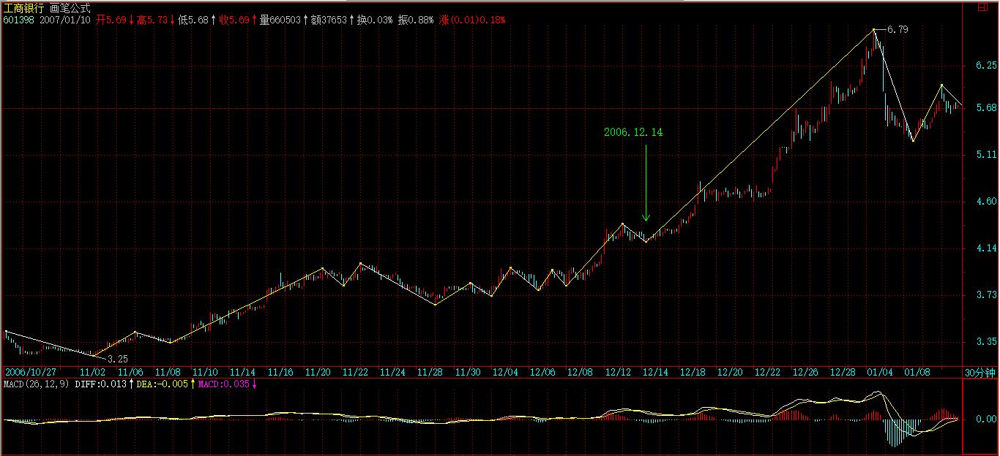
==
可以这样认为，以后说到趋势中，中枢形态的交替原则，就知道为什么这次的调整如此急促，因为很简单，上次的中枢形态是平台，这以后再说了。【韶山映山红】这里是第二次说到“交替原则”。趋势中，中枢形态的交替原则。上次的中枢形态是平台，这次就是急跌。可以做个专题。以后研究。】
2、600779从30分钟图看，12月20日14.58-1月05日12.37为第一段下跌走势，然后到1月9日14.08为第二段上涨走势，到1月10日13.47为第二段下跌走势，已经有连续三个走势，完成一个中枢（13.47-14.08），接下来继续可能会是一个扩张或新生，
【韶山映山红】600779水井坊。】
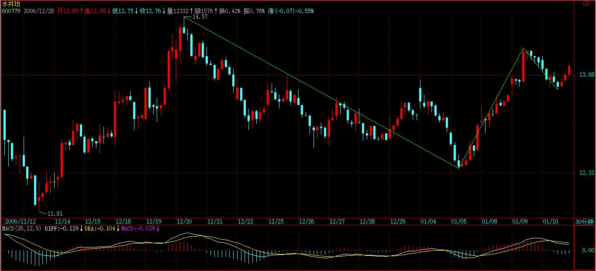
===
目前这样的走势，延伸、扩张、新生都可能，因此在这种位置，在日线上是没有买点的，该股在日线上最近的一个买点就是12月5日的第三类买点。对于这样的股票，只能是在低位买的继续持有，按照低级别图弄点短差。当然，中线是没问题的。
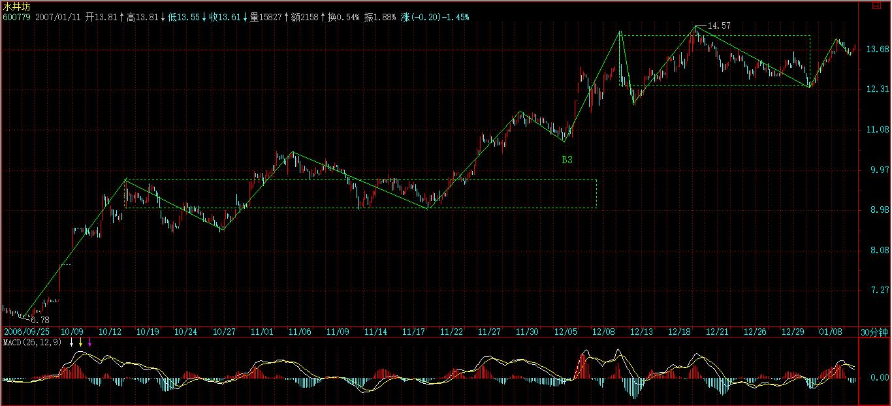
4、在上证50中选择的600795（12月29日买入）已有56%收益，选择的600428（1月4日），仅4天已涨幅27%，可惜资金小了，感谢禅主！
===
56%？6元到8元怎么会有56%？干事情要精确点。
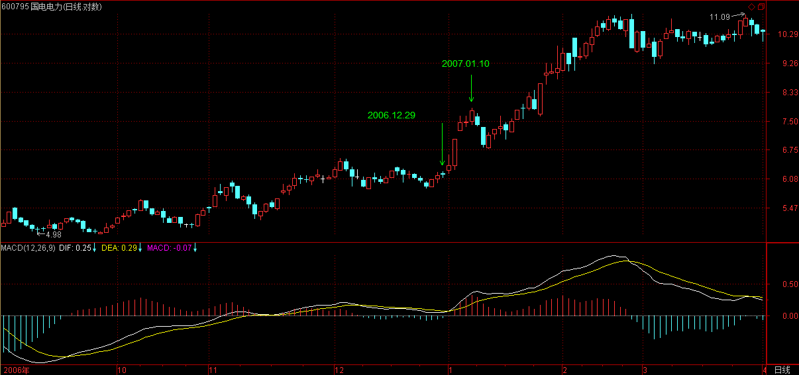
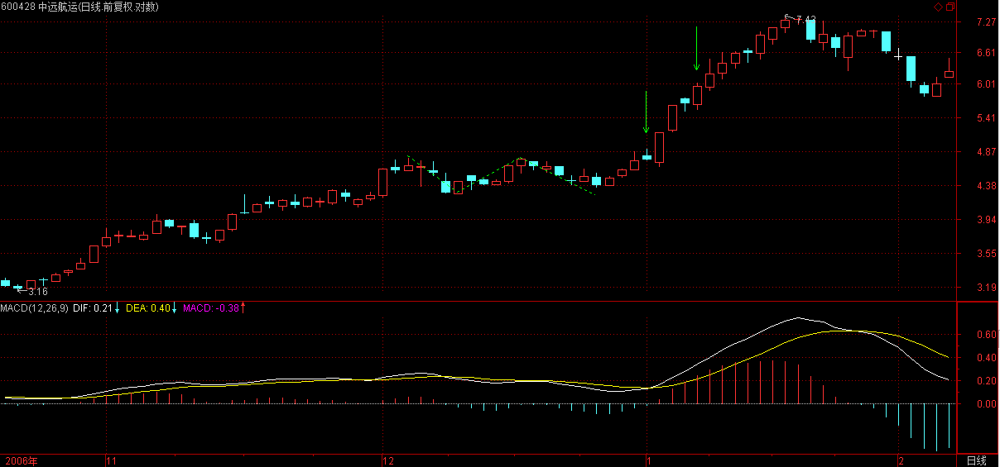
2007-1-10 21:44
[匿名] 你的粉丝 2007-01-10 21:38:51
记得以前你还说过买的有广深铁路啊，怎么卖了？
============
现在也没卖呀，但那不是这笔资金干的活。本ID这5只是一笔新资金，一个耗了N年的实业项目套现出来的资金，这不在以前都说过了？
2007-1-10 21:48
[匿名] 过客 2007-01-10 21:45:21
小姐，您好！我初入股市，资金很少，就想赚点零花钱。我时间较为充裕，希望小姐能介绍一些前景较好的股票，感谢先。
===========
好象现在这里问这种问题的人已经不多了，希望你在这里时间长点，也和大家一样自己立起来。
2007-1-10 21:50
[匿名] 心禅 2007-01-10 21:50:54
56%？6元到8元怎么会有56%？干事情要精确点。
-------------
谢谢“禅主”批语，确实粗心了，可我上面1、2、3问题对否？还等回答！或者不回答就是“默许”？脑筋愚
=========
都回答了，没看到？
1、工行日线级别的调整需要30分钟图上3个连续走势（下跌-上涨-下跌），完成一个“缠中说禅中枢”，现在是第二个走势阶段；
=========
可以这样认为，以后说到趋势中，中枢形态的交替原则，就知道为什么这次的调整如此急促，因为很简单，上次的中枢形态是平台，这以后再说了。
2、600779从30分钟图看，12月20日14.58-1月05日12.37为第一段下跌走势，然后到1月9日14.08为第二段上涨走势，到1月10日13.47为第二段下跌走势，已经有连续三个走势，完成一个中枢（13.47-14.08），接下来继续可能会是一个扩张或新生，
=======
目前这样的走势，延伸、扩张、新生都可能，因此在这种位置，在日线上是没有买点的，该股在日线上最近的一个买点就是12月5日的第三类买点。对于这样的股票，只能是在低位买的继续持有，按照低级别图弄点短差。当然，中线是没问题的。
2007-1-10 21:54
[匿名] 外科医生 2007-01-10 21:54:03
药里面有啥股票可以搞的吗？我现在资金在钢铁，铁路。泸天化和一支低价玻璃股。等出来了，还能赶上药吗？多谢
===
年底回头看沪深300，基本涨幅都不会相差太多的。先关心的应该自己的股票是否出现卖点了，而不是老绝对隔壁的饭菜总比自家的好。
高手并不一定都能拿到每一只黑马，但高手一定能在该走的时候走，该留的时候留，走了又了找到新的猎物，复利的威力是最大的黑马。
2007-1-10 21:58
太晚了，先下，再见。
再说一次，目前短线的主题就是补涨，从50到300，到非成分股，注意这个节奏，至于大盘，晃荡几下是正常的。【韶山映山红】果然最终的结果只是晃荡几下的级别。】
目前最有力的就是第三类买点的低价股票。
2007-1-10 22:02
本课目录
教你炒股票21：缠中说禅买卖点分析的完备性心态